Aspectos de los datos del MSN a tener en cuenta
Carga de Datos Lenta
Una de las dificultades más importantes para poder hacer predicciones
epidemológicas es la carga lenta de los datos diarios. El
gráfico muestra un ejemplo, extraído de fuentes oficiales del Ministerio de Salud de la Nación.
En las poblaciones referidas se puede observar una caída sistemática
del número de casos diarios los últimos días. Esta caída es artificial
y la misma estructura se repite día a día. Se debe a que las bases de datos no se actualizan
rápidamente. En las pobla ciones de la figura, se aprecia una demora de hasta
10 días.
¿Fechas erróneas?
Otra de las dificultades más importantes para poder hacer predicciones
epidemológicas es que la fecha de inicio de síntomas, que es central para
el estudio epidemológico, en el 40% de los casos no está reportada,
y cuando lo está, hay un 3% donde está reportada en forma no fiable,
como explicamos a continuación.
Hay dos fechas que reporta el MSN por cada caso positivo:
la fecha de inicio de síntomas y la fecha de apertura del caso.
Lo que encontramos es que la fecha de apertura de los casos, que
debería ser posterior a la fecha de inicio de síntomas, muchas veces es anterior.
Este tipo de error de carga ocurre con muchas localidades.
En las figuras siguientes se grafica la fecha de apertura de caso en el eje vertical
y fecha de inicio de síntomas en el eje horizontal. Lo esperable
sería que los puntos de cada caso estén -sobre o por encima- de la recta
(roja en el gráfico) a 45 grados, que
indica igualdad de las dos fechas. Como puede apreciarse sin embargo,
muchos puntos están por debajo. Es decir, todos esos puntos en la "zona gris"
tienen una fecha de apertura -anterior- a la fecha de inicio de síntomas
y por lo tanto no son fiables (con la mucho más reciente modalidad de considerar
positivos a los contactos estrechos de un infectado sin testearlos, podría darse
sin embargo una fecha de apertura anterior a la de inicio de síntomas).
Río Negro
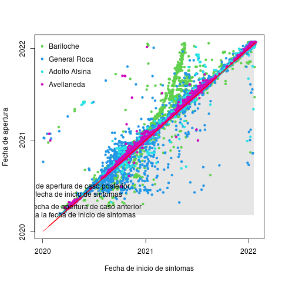
Buenos Aires
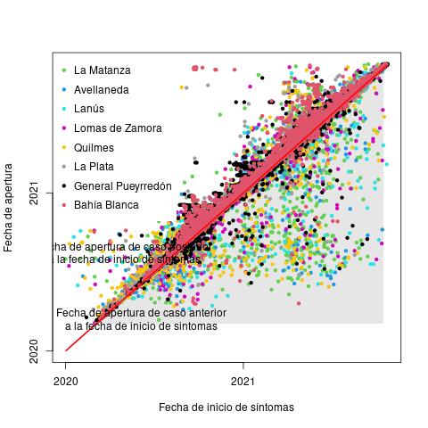
CABA
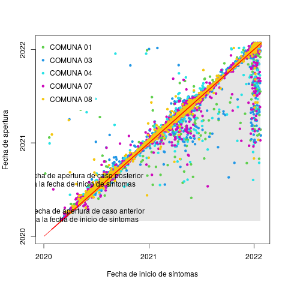
Chaco
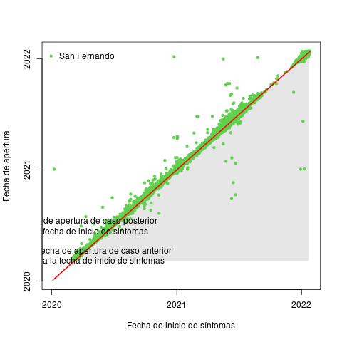
Córdoba
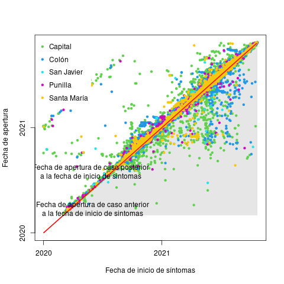
Jujuy
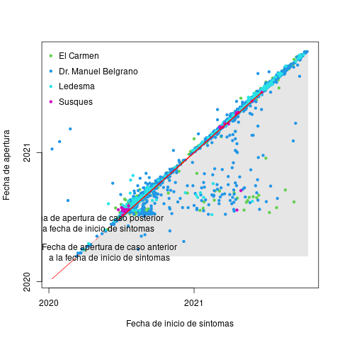
Mendoza
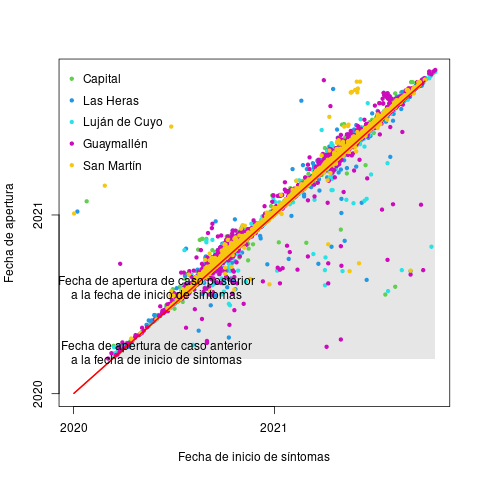
Neuquén
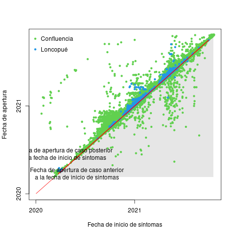
Salta
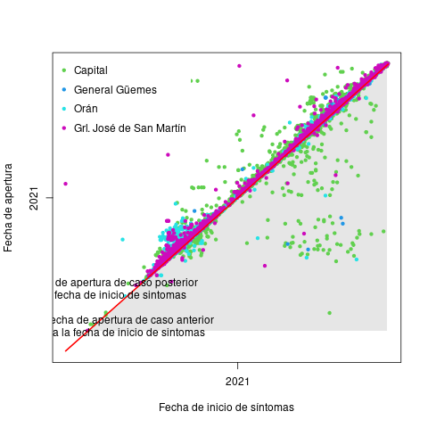
Santa Cruz
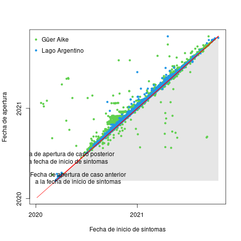
Santa Fe
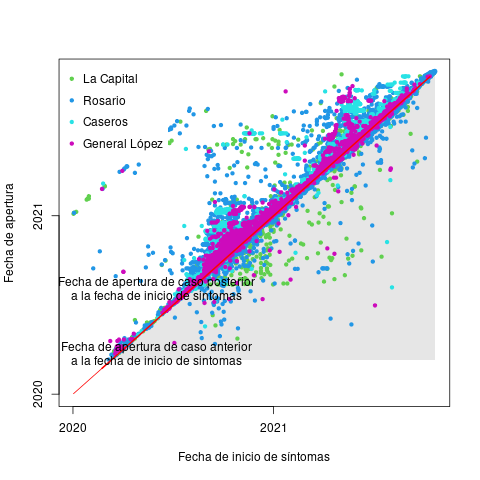
Tierra del Fuego

Tucumán
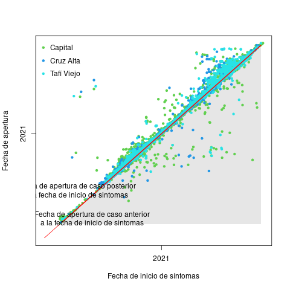